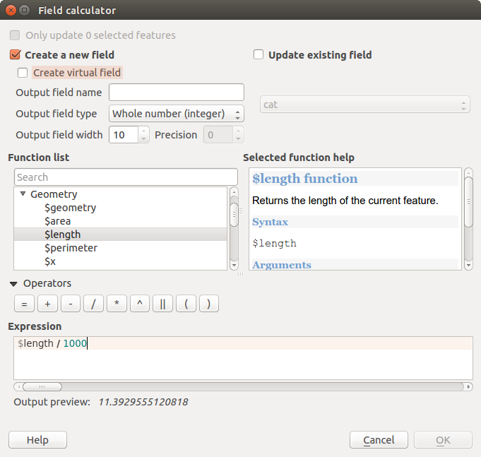

Field Calculator
The  Field Calculator button in the attribute table allows you to perform calculations on the basis of existing attribute values or defined functions, for instance, to calculate length or area of geometry features. The results can be written to a new attribute field, a virtual field, or they can be used to update values in an existing field.
Field Calculator button in the attribute table allows you to perform calculations on the basis of existing attribute values or defined functions, for instance, to calculate length or area of geometry features. The results can be written to a new attribute field, a virtual field, or they can be used to update values in an existing field.
Virtual Fields
- Virtual fields are not permanent and are not saved.
- To make a field virtual it must be done when the field is made.
The field calculator is now available on any layer that supports edit. When you click on the field calculator icon the dialog opens. If the layer is not in edit mode, a warning is displayed and using the field calculator will cause the layer to be put in edit mode before the calculation is made.
The quick field calculation bar on top of the attribute table is only visible if the layer is editable.
In quick field calculation bar, you first select the existing field name then open the expression dialog to create your expression or write it directly in the field then click on Update All button.
Expression tab
In the field calculator dialog, you first must select whether you want to only update selected features, create a new attribute field where the results of the calculation will be added or update an existing field.

If you choose to add a new field, you need to enter a field name, a field type (integer, real or string), the total field width, and the field precision. For example, if you choose a field width of 10 and a field precision of 3, it means you have 6 digits before the dot, then the dot and another 3 digits for the precision.
A short example illustrates how field calculator works when using the Expression tab. We want to calculate the length in km of the railroads layer from the KADAS sample dataset:
- Load the shapefile
railroads.shpin KADAS and press Open Attribute Table.
Open Attribute Table. - Click on
 Toggle editing mode and open the Field Calculator dialog.
Toggle editing mode and open the Field Calculator dialog. - Select the
 Create a new field checkbox to save the calculations into a new field.
Create a new field checkbox to save the calculations into a new field. - Add
lengthas Output field name andrealas Output field type, and define Output field width to be 10 and Precision, 3. - Now double click on function
$lengthin the Geometry group to add it into the Field calculator expression box. - Complete the expression by typing ‘’/ 1000’’ in the Field calculator expression box and click [Ok].
- You can now find a new field
lengthin the attribute table.
The available functions are listed in Expressions chapter.
Function Editor tab
With the Function Editor you are able to define your own Python custom functions in a comfortable way. The function editor will create new Python files in qgis2pythonexpressions and will auto load all functions defined when starting QGIS. Be aware that new functions are only saved in the expressions folder and not in the project file. If you have a project that uses one of your custom functions you will need to also share the .py file in the expressions folder.
Here’s a short example on how to create your own functions:
@qgsfunction(args="auto", group='Custom')
def myfunc(value1, value2 feature, parent):
pass
The short example creates a function ‘myfunc’ that will give you a function with two values. When using the args=’auto’ function argument the number of function arguments required will be calculated by the number of arguments the function has been defined with in Python (minus 2 - feature, and parent).
This function then can be used with the following expression:
myfunc('test1', 'test2')
Your function will be implemented in the ‘Custom’ Functions of the Expression tab after using the Run Script button.
Further information about creating Python code can be found on http://www.qgis.org/html/en/docs/pyqgis_developer_cookbook/index.html.
The function editor is not only limited to working with the field calculator, it can be found whenever you work with expressions.